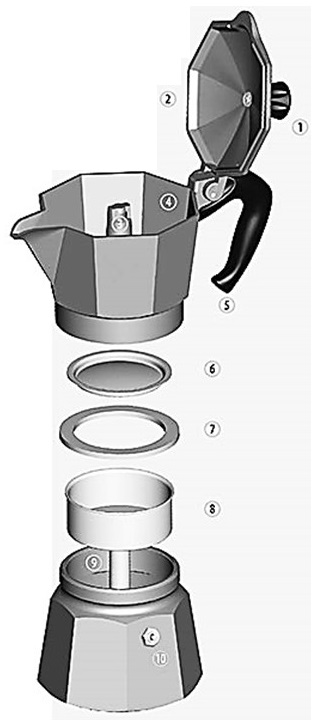

How your moka pot is built
Moka pot construction
The moka pot has a straightforward design.

- Knob
- Lid
- Small Column
- Coffee colector
- Handle
- Filter Plate
- Gasket
- Funnel
- Heating Vessel
- Safety Valve
Today the moka pots are mainly manufactured of aluminium. In fact, the first moka pot was made of aluminium. This material shows ability to gain and lose heat quickly. It also is affordable and versatile. Aluminium was the first option, but not the best one. At present, stainless steel moka pots became more popular.